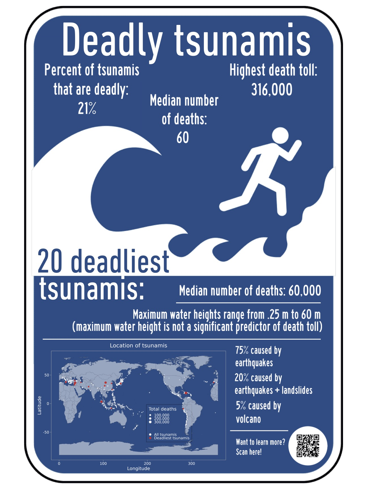
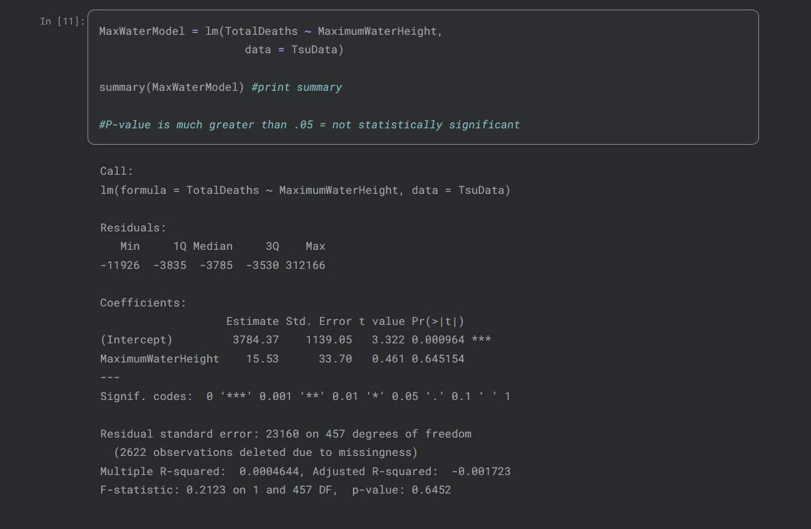
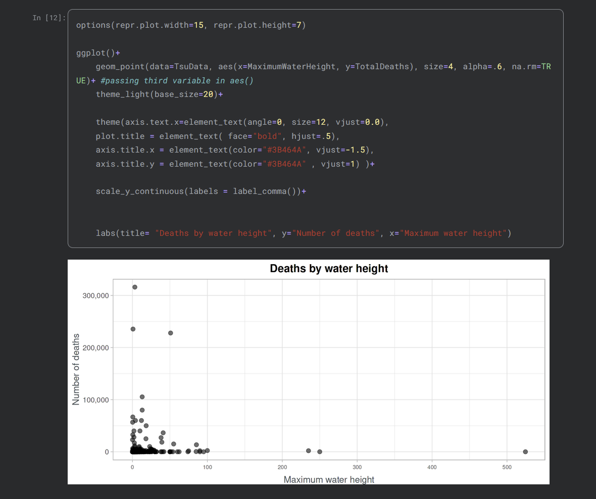

R · TIDYVERSE · STATISTICS · MARKDOWN
Global Tsunami Data Analysis
An analysis of NOAA tsunami data, combining statistical methods, data visualization, and narrative communication.
BACKGROUND
Exploring the Data
Using R, I created a Jupyter notebook that explores NOAA’s tsunami dataset and answers frequently asked questions about tsunamis.
My focus was on analyzing the data and communicating the results through a narrative structure using Markdown. I also designed an infographic to communicate basic information about deadly tsunamis to a general audience.

METHODS
Statistical Analysis
Using a combination of descriptive statistics, hypothesis testing, linear models, and data visualization, I explored questions focused on common misconceptions about tsunamis.

